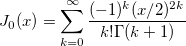

/math-07710b5c43702a8bb7b9104eacc6ba71.png "\Gamma") .
.This function returns the zero order Bessel function:
J0(x)
The formula for the equation is:

See the gammaln(x) function for the definition of .
double J0(double x)
x
Returns the value of zero order Bessel function.
aa = j0(5); aa = ; //-0.17759677131434